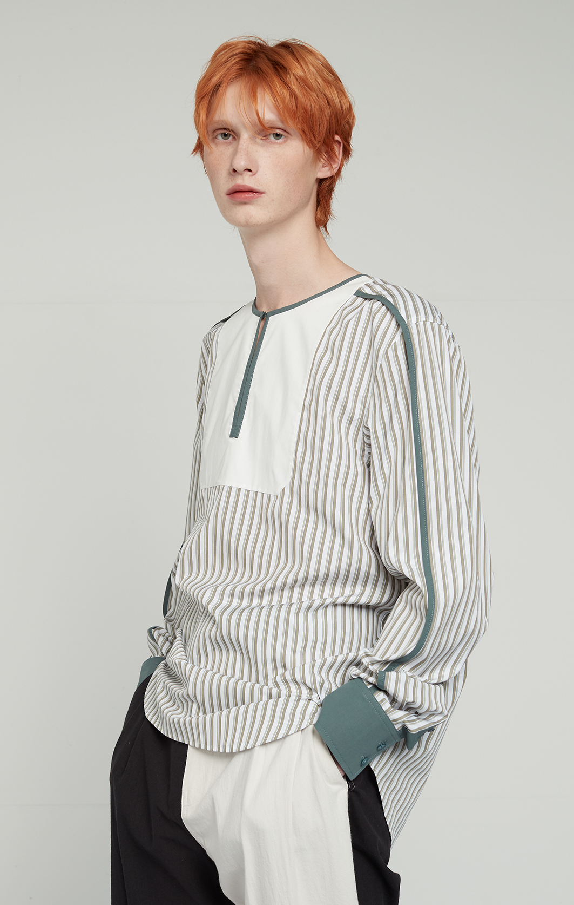

“Legame” 는 유대감을 뜻하는 이탈리아의 관용어로,과거와 현재가 공존하는 밀라노의 도심속 스타일을 경험한 디자이너가 점차 사라져가는 우리 곁’공예’에 대해 지속적 관심을 가지고 프리미엄 소재와 섬세한 아트워크로 표현하는 남성복 브랜드입니다.
안녕하세요, 레가메의 디자이너 유신희입니다. 저는 2016년 밀라노 Istituto Marangoni에서 패션디자인을 수료한 뒤, 현지 신진남성브랜드 Wolftotem Milan (울프토템밀란) 크리에이티브 디렉터 어시스턴트 디자이너로 첫발을 떼게 되었고 직책특성상 디자인 업무 외 바잉수주 등 브랜드의 성장과정 전체를 함께 기획하고 처리하다보니 그때의 경험이 지금의 레가메를 설립하는데 실무적으로 큰 도움이 되주었습니다. 당시 이미 중국에서 인지도가 높은 그룹 Septwolves(七匹狼: 치필랑) Black, Red, Green 3개 남성복 라벨들도 동일한 직책으로 2년동안 활동을 병행하였는데, 밀라노가 거점인 울프토템보다 폭넓은 연령대 및 지역적기후로 서로다른 니즈를 반영해야하는 중국 대기업의 커머셜한 대응 및 방대한 아카이브에 긍정적 자극을 받으면서도 많은 딜레마를 마주 하곤 했습니다. 그리고 2018년, 칼 라거펠트의 브랜드 기획을 마지막으로 회사생활을 정리한 뒤 고민끝에 1년 후 한국으로 돌아와 레가메를 만들게 되었습니다.
이러한 사색이 레가메의 시작이였듯 패션을 사랑하시는 많은 분 들께도 단순 외적인 아름다움 만을 담은 옷 한 벌이 아니라 매일 아침 거울 앞, 당신만의 대체 불가능한 삶을 응원하고 지지한다는 저희의 마음을 비춰드리고 싶었습니다.